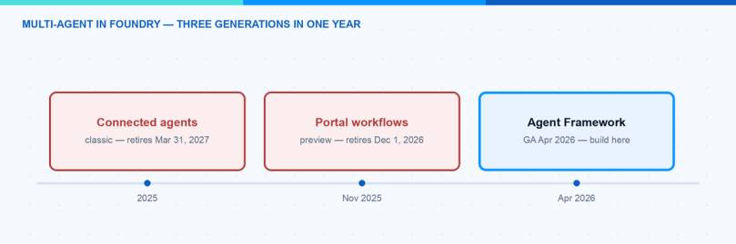
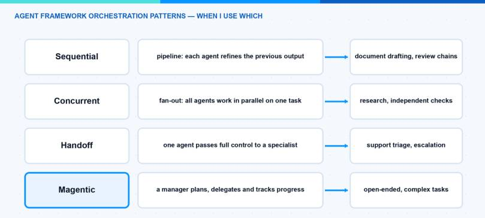
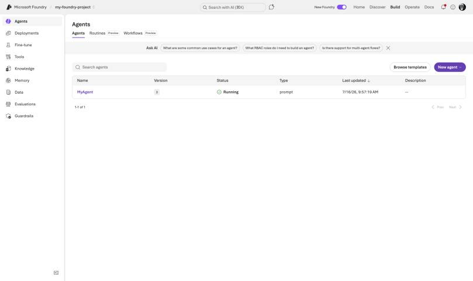
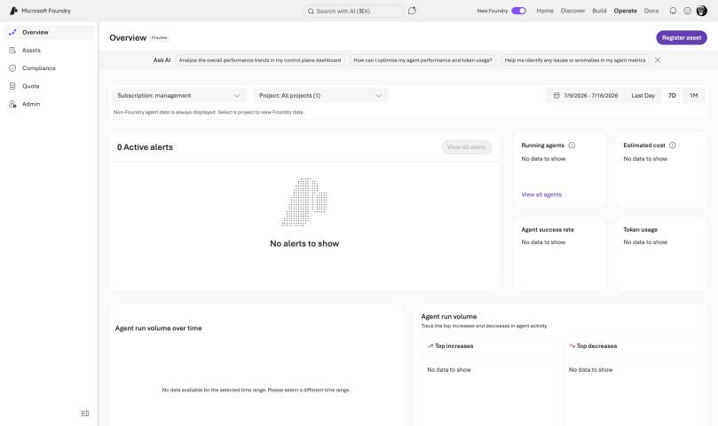
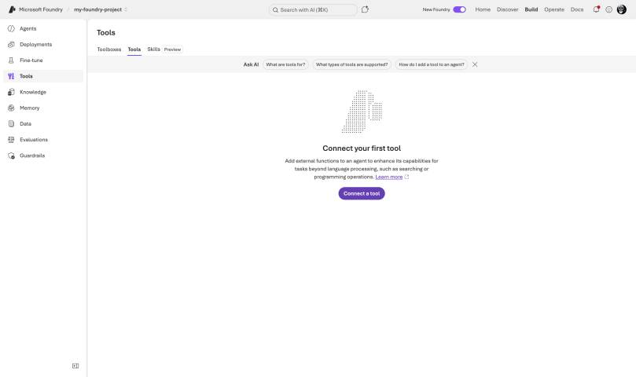
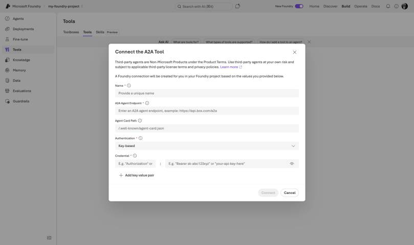

One agent alone rarely solves a real business process. As soon as you build something serious, you want a triage agent, a specialist for your knowledge base, maybe one that creates tickets — and something that coordinates them. In this blog post I do a deep dive into multi-agent orchestration in Microsoft Foundry. I explain how the story changed three times within one year, how the Microsoft Agent Framework patterns work, and which pattern I would choose for which scenario. At the end you will know exactly where to build your orchestration today so that it does not get deprecated next year.
I already wrote about building your first agent in Microsoft Foundry. This post is the next step: making several agents work together.
Why Did the Multi-Agent Story Change Three Times?
This is the part that confuses most people, so let us clear it up first. Microsoft shipped three different multi-agent mechanisms in roughly one year:
- Connected agents (classic). The original feature in the classic Foundry Agent Service — the old threads-and-runs platform. A main agent delegated to sub-agents through natural-language routing. The new Agent Service, which reached general availability on March 16, 2026, removed connected agents completely; the replacement is the A2A tool (more on it below). The classic platform itself retires on March 31, 2027.
- Portal workflows (preview). A visual designer in the Foundry portal for declarative agent sequences with if-else and for-each logic. It never reached general availability, and Microsoft is retiring the workflow designer on December 1, 2026. If you need a visual designer after that, Logic Apps is the recommended target.
- Microsoft Agent Framework. The open-source SDK that merged Semantic Kernel and AutoGen into one platform. It reached version 1.0 GA on April 3, 2026 and it is the place where Microsoft wants you to build orchestration from now on.

By the way, connected agents were not the only removal: the Deep Research tool is gone too. If you need deep research today, you combine the Deep Research model with the Web Search tool.
The division of labor is now clear: the Agent Framework is the SDK where the orchestration logic lives, and Foundry provides the production hosting, scaling, and observability around it. If you remember only one thing from this post, remember this sentence.
Note: If you still have connected agents or portal workflows running, you do not have to panic. Exported workflow YAML keeps running when deployed as a hosted agent, and there is a migration guide and tool for classic agents. But do not start anything new on the old mechanisms.
What Is the Microsoft Agent Framework?
The Agent Framework is the official successor of both Semantic Kernel and AutoGen, built by the same teams. Both predecessors are in maintenance mode now — bug and security fixes only — so all new pro-code agent work should start here. It combines the simple abstractions of AutoGen with the enterprise features of Semantic Kernel. Version 1.0 is available for Python and .NET, with Go in public preview.
Installation is one line (the Foundry connector ships as its own package):
pip install agent-framework agent-framework-foundry azure-identity
Connecting it to Microsoft Foundry is also simple. You create a chat client against your Foundry project and create agents from it — each agent is your model deployment plus its own instructions:
# Two Agent Framework agents on one Foundry model deployment
from agent_framework_foundry import FoundryChatClient
from azure.identity import DefaultAzureCredential
client = FoundryChatClient(
endpoint="https://<resource>.services.ai.azure.com/api/projects/<project>",
model="gpt-5-mini",
credential=DefaultAzureCredential(),
)
writer = client.create_agent(name="writer", instructions="Write a first draft.")
reviewer = client.create_agent(name="reviewer", instructions="Review and improve the draft.")
Sign in with az login first — the credential picks up your session. That is all the setup you need for the patterns below.
Which Orchestration Patterns Are Built In?
The framework ships five ready-made orchestration patterns. This is the heart of the topic, so let us go through them one by one.
1. Sequential — the pipeline
Each agent consumes the output of the previous one. Perfect when the task has a natural order: draft, review, finalize. This is also the pattern I recommend for your first multi-agent system, so here it is complete and runnable:
# Sequential two-agent workflow with the Microsoft Agent Framework
import asyncio
from agent_framework import SequentialBuilder
from agent_framework_foundry import FoundryChatClient
from azure.identity import DefaultAzureCredential
async def main():
client = FoundryChatClient(
endpoint="https://<resource>.services.ai.azure.com/api/projects/<project>",
model="gpt-5-mini",
credential=DefaultAzureCredential(),
)
researcher = client.create_agent(
name="researcher",
instructions="Collect the key facts on the topic as a short bullet list.",
)
writer = client.create_agent(
name="writer",
instructions="Turn the bullet list into a short, friendly summary for IT admins.",
)
# Researcher runs first, its output becomes the writer's input
workflow = SequentialBuilder().participants([researcher, writer]).build()
result = await workflow.run("What is the Model Context Protocol?")
print(result.get_outputs()[-1])
asyncio.run(main())
2. Concurrent — the fan-out
All agents work on the same task in parallel and the results are aggregated. I use this when I want independent perspectives, for example three agents checking a policy change for security, licensing, and user impact at the same time.
3. Group chat — the moderated discussion
An orchestrator decides who speaks next. The selection can be round-robin, a custom function, or even another LLM. One detail you should know: the agents do not share a session. The orchestrator broadcasts each response to all participants to keep the context in sync — which means token usage grows with every turn and every additional participant.
4. Handoff — pass the full task
One agent passes complete control to a specialist and does not take it back. This is the classic support triage: the triage agent decides if the order agent or the returns agent takes over. Important difference to the old connected agents: a handoff transfers ownership of the task, while the agent-as-tools model always returned control to the main agent.
5. Magentic — the manager
A manager agent plans the task, keeps a task ledger, delegates to specialists, tracks progress, and replans when things stall. It is based on the Magentic-One research from AutoGen. This is the most powerful pattern and also the least predictable in cost, because the manager iterates until it is satisfied. The builder lets you cap this with a maximum round count and a maximum stall count — set both, always, and enable human plan review for anything expensive.

Hint: All five patterns support human-in-the-loop. You can mark a tool with approval_mode="always_require" and the workflow pauses until a human approves. For anything that changes production systems I always turn this on.
Cheat Sheet: Which Pattern for Which Job?
| Pattern | Use when | Cost you pay |
|---|---|---|
| Single agent + tools | One agent with good tools can do it | None — always check this first |
| Sequential | The task has a fixed order | Latency adds up per step |
| Concurrent | You want independent answers in parallel | Tokens multiply by agent count |
| Group chat | Agents must react to each other | Context broadcast on every turn |
| Handoff | A specialist should own the task | Routing quality depends on descriptions |
| Magentic | Open-ended, complex problems | Least predictable token cost |
| A2A tool | The other agent is on another team, platform, or cloud | Preview; network hop and auth setup |
How Do I Get This Into Production? Hosted Agents
Orchestration code on your laptop is nice, but the production home for it is hosted agents in Foundry Agent Service. Hosted agents reached general availability in July 2026 and they are framework-agnostic: Agent Framework, LangGraph, the OpenAI Agents SDK, or plain custom code — you push a container image to Azure Container Registry (or hand Foundry a zip and it builds the image), and Foundry runs it. The fastest deployment path is the Azure Developer CLI: declare the agent as a service of type azure.ai.agent in azure.yaml, then azd provision and azd deploy.
What you get for free is quite a lot:
- A VM-isolated sandbox per session with a persistent home directory. Sessions scale to zero after 15 minutes idle (state is kept) and are deleted after 30 days of inactivity.
- An automatic Microsoft Entra agent identity and a dedicated endpoint per agent.
- Immutable versions with weighted rollouts, so you can canary a new agent version with, say, 10 percent of traffic.
- OpenTelemetry tracing into Application Insights, injected automatically.
The compute is billed by consumption during active sessions: $0.0994 per vCPU-hour plus $0.0118 per GiB-hour (US East), on top of model tokens and tool meters. Because idle sessions scale to zero, a lightly used orchestration is cheap. Hosted agents run in about 20 regions, including Sweden Central, Germany West Central, and Switzerland North — good news for European data residency.


One thing surprised me: you cannot attach tools directly to a hosted agent definition. Hosted agents consume Foundry tools — Code Interpreter, Azure AI Search, OpenAPI, MCP servers — through a single Toolbox MCP endpoint. A Toolbox is a versioned bundle of tools that you define once under Build → Tools and that any MCP-capable runtime can consume. So your agent code speaks standard MCP, and Foundry serves its whole tool ecosystem behind that one endpoint. Plan your Toolbox before you plan your container.

Where Do A2A and MCP Fit In?
The two protocols answer two different questions, and mixing them up causes a lot of confusion:
- MCP (Model Context Protocol) connects an agent to tools. In Foundry the MCP tool is GA: you attach an
MCPToolto a prompt agent, ideally with anallowed_toolslist and an approval flow, and the catalog under Build → Tools already contains more than 1,400 entries. - A2A (Agent2Agent) connects an agent to other agents — also across platforms and clouds. Foundry supports both directions, both currently in public preview. Your agent can call a remote A2A endpoint via the A2A tool, and you can expose a Foundry agent as an A2A endpoint with a published agent card at
/.well-known/agent-card.json. Incoming calls are Microsoft Entra only — no anonymous access, no API keys — and the least-privilege role for callers is Foundry Agent Consumer.
Setting up the outgoing side is a small click path: in the portal go to Build → Tools → Connect tool → Custom tab → Agent2Agent (A2A) → Create, then enter a name, the endpoint URL of the remote agent, and the authentication — an API key header, OAuth, the project managed identity, or the agent identity. In the SDK the connection becomes a normal tool:
# Attach a remote A2A agent as a tool (public preview)
from azure.ai.projects.models import A2APreviewTool, PromptAgentDefinition
agent = project.agents.create_version(
agent_name="dispatcher",
definition=PromptAgentDefinition(
model="gpt-5-mini",
instructions="Route network questions to the network specialist agent.",
tools=[A2APreviewTool(project_connection_id=conn.id)],
),
)
Two runtime details matter. First, the calling agent stays in control: the remote answer is summarized back into the caller’s context. Second, this is a peer call, not a handoff — the user keeps talking to your agent. A2A is also the platform bridge: Copilot Studio speaks it too (GA there since April 2026), so a low-code front-end agent in Teams can delegate to your Foundry orchestration — see my Foundry vs Copilot Studio post.

My simple rule: MCP for tools, A2A for delegation across team or platform boundaries, Agent Framework patterns for orchestration inside one solution.
What About Shared Memory?
One question that always comes up in multi-agent designs: how do my agents remember things across sessions? Foundry has an answer in preview — memory stores. You create a memory store in the project, attach it to agents via the memory search tool, and partition it with a scope so that each user only sees their own memories. Because several agents can attach the same store, this is also a simple way to share long-term context inside one solution.
Note: Memory is still preview, but no longer free — billing started on June 1, 2026 ($0.25 per 1,000 stored events, $0.25 per 1,000 long-term memories per month, $0.50 per 1,000 retrievals in US East). Small numbers, but they multiply with agent count.
The Approach I Actually Use
When I plan a multi-agent solution today, I go through this list:
- Can one agent with good tools do it? Then I do not build multi-agent at all. Every additional agent adds latency, cost, and failure modes.
- Fixed process? Sequential workflow in Agent Framework, deployed as a hosted agent.
- Routing to specialists? Handoff pattern, with clear one-sentence descriptions per specialist — the routing quality is only as good as these descriptions.
- Open-ended research or analysis? Magentic, with the round and stall limits set and human plan review enabled, because the token bill can surprise you.
- The other agent belongs to another team or platform? A2A, not a shared workflow.
Pitfalls I Now Avoid
- Building new solutions on connected agents or the portal workflow designer. Both are on a published retirement path. I only build orchestration in Agent Framework now.
- Magentic without limits. The manager replans on stalls, and without a round limit and a stall limit you pay for its patience. Set both, always.
- Group chat for large agent counts. Because every response is broadcast to all participants, ten agents means ten context copies per turn. Above three or four agents I switch to handoff or magentic.
- Forgetting that publishing changes identity. Unpublished agents share the project’s agent identity; when you publish an agent, it gets its own Entra agent identity — and existing role assignments do not carry over. Plan the RBAC re-assignment into your release step.
- Assuming citations flow through delegation. Sub-agent citations were never guaranteed to reach the user in the old connected-agents model, and a summarized A2A answer has the same problem. In my workflows, the agent that talks to the user is the one that does the grounding.
Where This Is Heading
The direction is clear: orchestration logic moves into open source (Agent Framework), the runtime moves into Foundry hosted agents, and the connective tissue becomes standard protocols — MCP for tools, A2A for agent-to-agent. Microsoft retiring its own portal designer in favor of the SDK tells you everything about where they see the future. If you want to go deeper into the platform basics first, start with my first-agent walkthrough and the comparison of Microsoft Foundry vs Copilot Studio, and keep the Agent Framework docs bookmarked.
I hope this deep dive helps you to place your orchestration bet on the right platform.
Stay healthy, Cheers Jannik